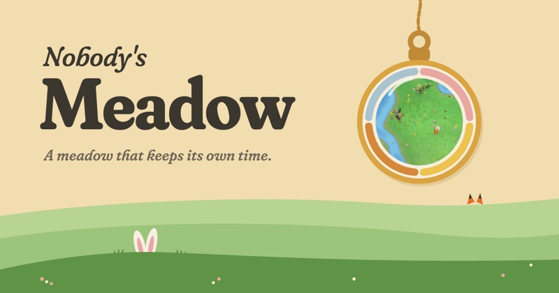
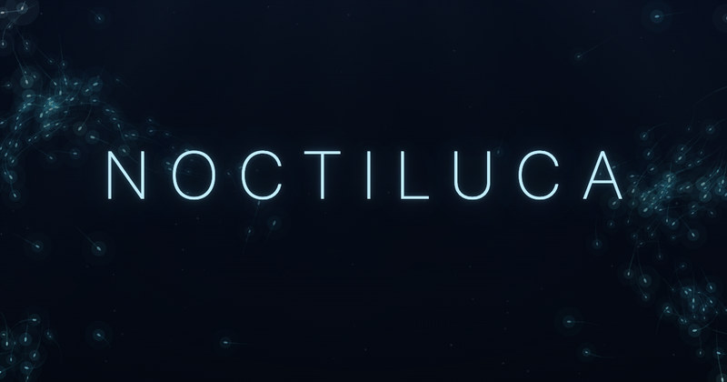

Nobody's Meadow
GameA small meadow that keeps its own time. Rabbits, foxes and bees live their lives, season after season.
meadow.cryptoler.net
Noctiluca
Ambient · soundTwo hundred bioluminescent organisms drifting through dark water, and the sound they make while doing it.
noctiluca.cryptoler.netThe Eye
Chat · sign inA realtime chat with direct messages, a public #GLOBAL channel and slash commands.
eye.cryptoler.netÖdemark
Field journal · privateA private map and journal of places worth walking to.
odemark.cryptoler.net